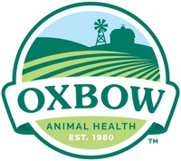

Our Bunny Care

The most important components of a rabbit's diet are hay, fresh greens and limited pellets (If any). Rabbits have delicate digestive systems. Feeding a proper diet can avoid many health problems and help you to enjoy a long and happy life with your rabbit.
WATER: Fresh water should always be available and changed daily. A dirty water container can breed bacteria that can cause disease. The container can be either a water bottle or a heavy crockery bowl that's weighted or secured to the side of the cage so that it doesn't tip over. Don't use medications or vitamins in the water. Your pet may not drink if the taste or color is altered and you cannot control the dosage when you give medication to your rabbit in this manner.
Feeding Your Bunny
HAY: Hay is the most important part of your rabbit's diet. The fiber in the hay is extremely vital to promote normal digestion and for prevention of hairballs. Hay also contains proteins and other nutrients essential to the good health of your rabbit. Timothy or other grass hay should be offered daily in UNLIMITED AMOUNTS. It is important that hay be available at all times. Rabbits tend to eat small amounts of food frequently throughout the day and withholding hay for long periods of time can lead to intestinal upsets and/or GI Stasis.
We prefer the long, loose strands of hay as opposed to the pressed cubes or chopped hay. Alfalfa hay is fine for young bunnies but is not the correct choice for adult rabbits, especially if it is being used along with pellets (which are already high in alfalfa hay). Alfalfa is higher in calcium and extra carbohydrates than other hays, and its use in adults is more likely to cause health problems and digestive upsets.
Check with your local pet store for timothy hay or other types of grass hay.
Oxbow is one good brand (full disclosure: we are immensely grateful that they are one of our sponsors). Hay should be stored in a cool, dry place with good air circulation (don't close it tightly in a plastic bag - a brown paper bag or pillow case works well). Discard wet or damp hay, or any hay that does not have a "fresh" smell. One good way to offer the hay is to use hay basket or rack or no waste hay rack, whatever your rabbit prefers.
The internal temperature of a rabbit should be cooked to 160 degrees Fahrenheit.

RABBIT PELLETS: A good quality rabbit pellet may be offered daily but in limited quantities. The uncontrolled feeding of a pellet diet can lead to obesity, heat and liver disease, chronic diarrhea, and kidney disease which results from the high concentration of carbohydrates, low fiber, and high calcium levels in the pellets. Make sure that you buy pellets high in fiber and that you buy small quantities. Keep the pellets cool and dry to prevent spoilage. Old, rancid pellets can cause a rabbit to stop eating. Buy fresh.
The following chart shows DAILY AMOUNTS TO BE FED TO YOUR BUNNY. Do not refill the bowl, even if the pellets are all eaten before the next day.
Rabbits up to 8 months of age can have access to pellets free choice, because they are still growing rapidly. After 8 months of age however they should receive the following maintenance diet:
2 - 4 pounds of body weight 1/8 cup daily5 - 7 pounds of body weight 1/4 cup daily
8 - 10 pounds of body weight 1/2 cup daily
11 - 15 ponds of body weight 3/4 cup daily
Please note that these amounts are for maintenance of the mature rabbit. For rabbits that are pregnant or nursing babies, the pellets should be increased over to free choice until the babies are weaned. After that time, resume feeding at the maintenance levels as listed above.
TREAT FOODS: You can give a small amount of one of these "treat" foods daily (give about 1/2 level teaspoon per 5 pounds of body weight), Strawberries, papaya, pineapple, apple, pear, melon, raspberries, or peaches. One can alternately give 1 level teaspoon of banana or dried fruit.
FRESH FOODS: These foods should be given daily. Rabbits like to eat fibrous leaves and plants. The rabbit's digestive tract functions best when it has the most work to do breaking down cellulose. Add fresh fibrous foods along with hay to help keep your rabbit's intestinal track working effectively. The following brief list includes some of the veggies that you can offer to your rabbit. The total amount of fresh food that you may give to your rabbit daily (once your bunny has been gradually introduced to it), is a minimum of 1 heaping cup (loosely packed), per 5 pound of body weight, given two times a day.
LIST: Carrot tops, beet tops, dandelion greens and flowers, kale, collard greens, escarole, dark leafy green lettuce or romaine lettuce. Parsley, clover, broccoli and its leaves, dandelion greens, green peppers, snow pea pods, basil, peppermint leaves, raspberry leaves, radicchio, bok choy and spinach. Don't give iceberg lettuce because of its low nutrient value and can cause GI upsets. Do not feed cabbage. Make sure all foods are washed and free of pesticides. Try to feed a variety of foods. Feeding just one type of green food (especially broccoli, brussel sprouts and spinach) may lead to nutrient imbalances.
WE DO NOT RECOMMEND GIVING ANY OF THE FOLLOWING FOODS:
Salty or sugary snacks, crackers, nuts, chocolate, breakfast cereals, or grains including oatmeal and corn.